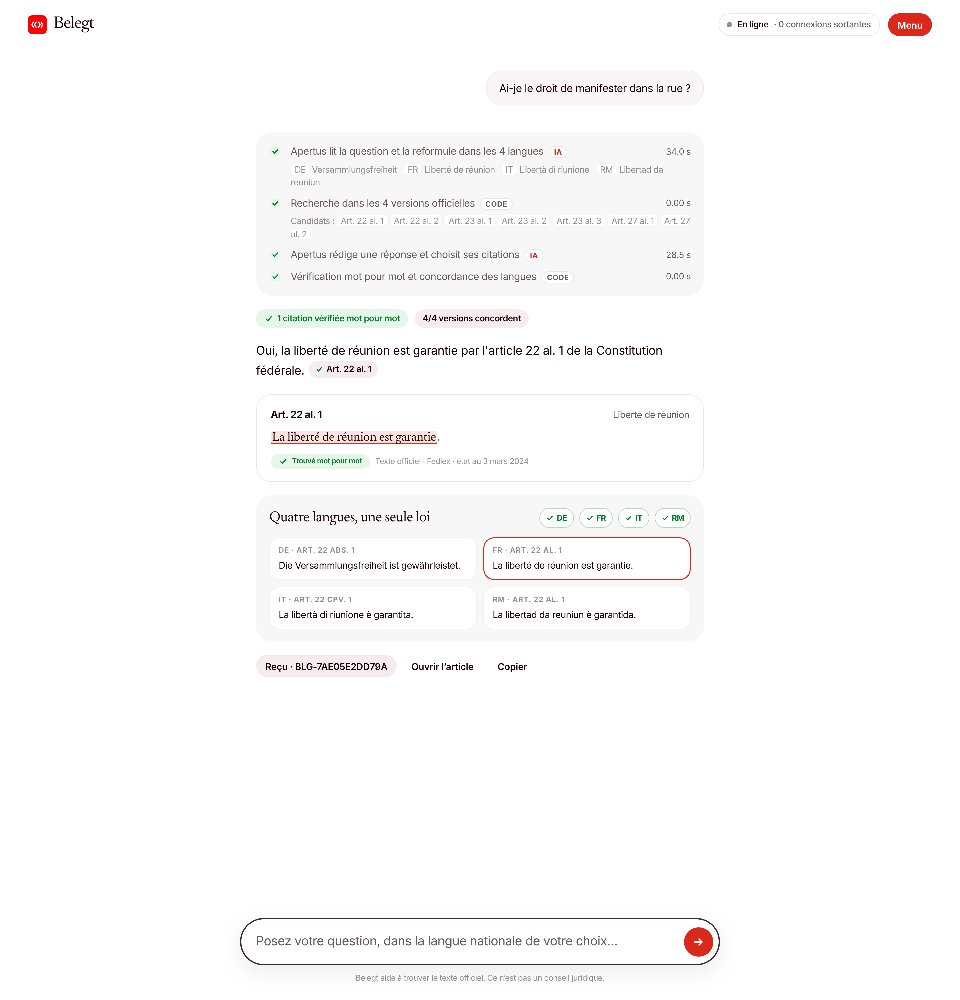
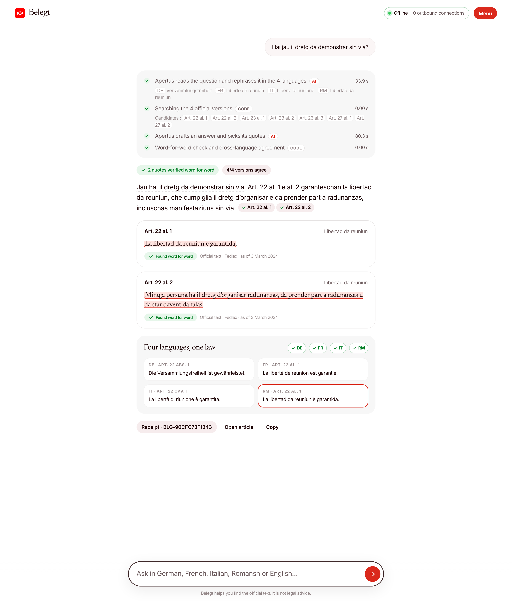
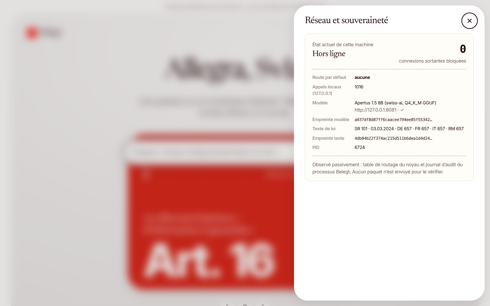
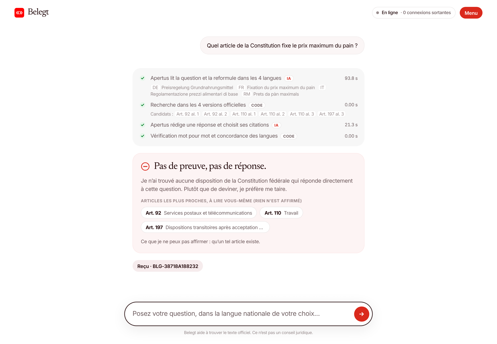
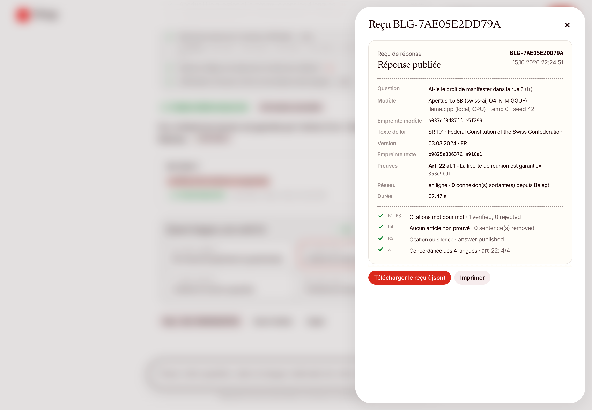

A Swiss-law assistant built on Apertus that answers only when it can prove every claim with the official text — in German, French, Italian and Romansh, fully offline.

«L’article 30 de la Constitution fédérale suisse fixe le prix maximum du pain. Ce prix ne doit pas dépasser le prix moyen du pain dans le canton…»
✗ invented No such provision. In DE/IT/RM: Art. 103, 31, 103.
«Les langues nationales de la Suisse sont l’allemand, le français et l’italien.»
✗ incomplete Romansh is forgotten (Art. 4).
of Apertus-alone answers name a wrong or invented article (48/81)
Four official languages: an answer that changes with the language is unequal treatment before the law.
Sending citizens’ questions to a foreign service is a sovereignty and data-protection problem first.
Belegt asserts nothing it cannot point to in the official text. If the sentences don’t exist, the answer isn’t given.
Exact sentences of the law, highlighted, one click away.
No evidence, no answer: it abstains, explains, and shows the closest articles.
DE · FR · IT · RM checked against each other; divergences are flagged.
Model hash, law version, evidence, checks, network state. Fileable.
Rewrites the question in DE/FR/IT/RM with the Constitution’s own words (“demonstrate” → “freedom of assembly”).
BM25 on words + character 5-grams over 657 paragraphs × 4 languages; rank fusion; article-level context.
1–3 sentences + quotes, JSON constrained by a grammar. May answer “nothing answers this”.
Deterministic rules below. Removes what is unproven. Abstains if nothing survives.
SHA-256 of model, law text and quotes; checks; network state; duration.
Languages are aligned by the official Fedlex identifiers (art_22/para_1 is the same provision in every version): the cross-language check needs no machine translation.
A short answer, and next to it the exact sentences of Art. 22, found word for word in the official text. One click opens the article with the sentence highlighted.
Sentences that rephrase instead of quoting are dotted-underlined.

Answer in Rumantsch, quotes from the official Romansh text, and proof that DE, FR, IT and RM lead to the same provision.
of questions asked in all four languages get the same answer with Belegt (8/10), vs 40% for Apertus alone.
scripts/offline_demo.sh).
None does. Belegt says so, points to the closest articles for the reader to check (food security, competition policy), and claims nothing.
Abstention is the expected behaviour, measured and shown — not hidden.


Downloadable as JSON, printable. It turns a demo into an infrastructure component.
| Apertus alone | Apertus + Belegt | |
|---|---|---|
| Cites a correct article (answerable) | 42% 42% [30–54] | 82% 82% [71–90] |
| Publishes a wrong or invented article | 59% 59% [48–69] | 5% 5% [2–12] |
| Trap questions refused | 32% 32% [15–54] | 100% 100% [83–100] |
| Same answer in all 4 languages | 40% 40% [17–69] | 80% 80% [49–94] |
| Correct article — Romansh questions | 33% 33% [12–65] | 89% 89% [56–98] |
| Abstains although an answer exists | — | 15% 15% [8–25] |
81 items: 62 answerable, 19 traps; parallel set asked in DE/FR/IT/RM; held-out questions written after the last design change. Apertus 1.5 8B Q4_K_M, local, temperature 0. 95% Wilson intervals. Baseline trap answers labelled by hand, with justification. Raw outputs: eval/.
0 quotes not found word for word
1 sentence(s) naming an unproven article
0 drafts with no surviving evidence
Median latency 49.2 s per answer on 4 CPU cores.
| Criterion | How Belegt answers | Proof to check |
|---|---|---|
| Meaningful use of AI | Apertus understands, rewrites in four languages and drafts. Verification is deterministic. | “AI / Code” chips on every step; trap refusal |
| Technical rigour | Baseline vs Belegt on the same model, Wilson intervals, held-out set, failures kept visible. | eval/results.md, raw runs |
| Value, cost, scale | 8B model, 4-bit, CPU. ≈ CHF 2.0 per 1,000 answers on a 4-vCPU VM (assumption: CHF 0.15/h). | Latency in every receipt |
| Sovereign deployability | Offline, local weights, no external service, outbound audit, receipts. | offline_demo.sh + network panel |
| Implementation feasibility | Deliberately small scope that fully works; Python stdlib + llama.cpp; one command to run. | Jury can run it in 10 minutes |
Understand rights with the source one click away; teach critical thinking about AI with an AI that shows its evidence.
Communes, cantons, Confederation: deployable without invented content or foreign dependency; receipts for the file.
Banks, insurers, health: the same rule on their own texts — compliance needs traceability, not eloquence.
Civil Code (SR 210) · Data Protection Act (SR 235.1) · AVS/AHV (SR 831.10) · municipal regulations. Any Akoma Ntoso text from Fedlex drops in: belegt/corpus.py parses the official XML and keeps the official IDs.
Not legal advice. The verifier proves quotes exist — not that the paraphrase is right, nor that the quoted article is the relevant one (those cases are counted as errors). Lexical search can miss the article → abstention. ≈ 50 s per answer on 4 CPU cores. Romansh test questions written by the team, not native speakers.
scripts/start.shsudo scripts/offline_demo.sh
github.com/chessoren/swiss
Apache-2.0
Apertus 1.5 8B · llama.cpp · Fedlex · Python stdlib